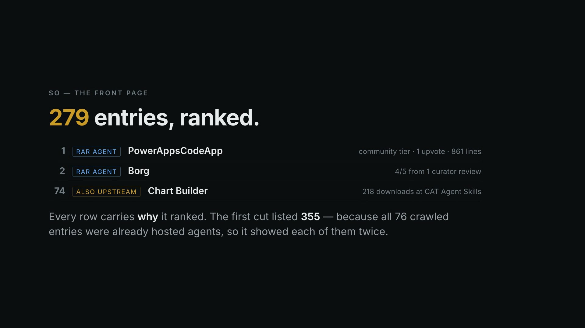
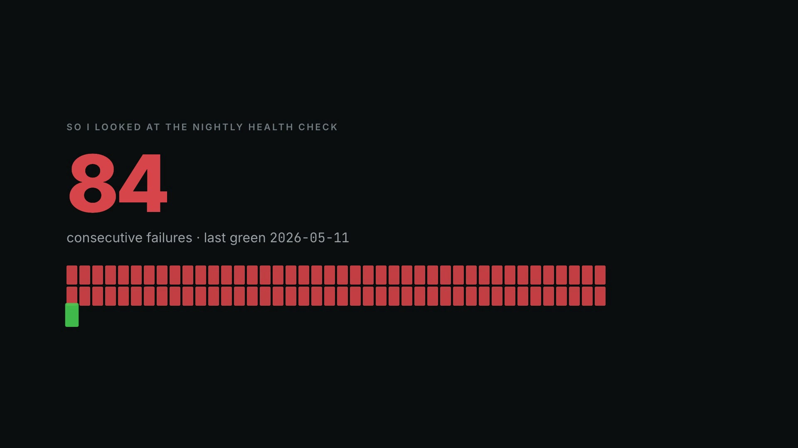

What landed on the front page of the agentic web, and what broke getting there.

Two asks, one message apart: make RAR the front page of the agentic web, and do not break anything with ANY future change. They pull against each other, so the second one went first.

A release was requested. Pre-flighting the gates locally first turned up two failures that had nothing to do with the release, and following them led somewhere worse: the nightly health check had failed 84 times in a row